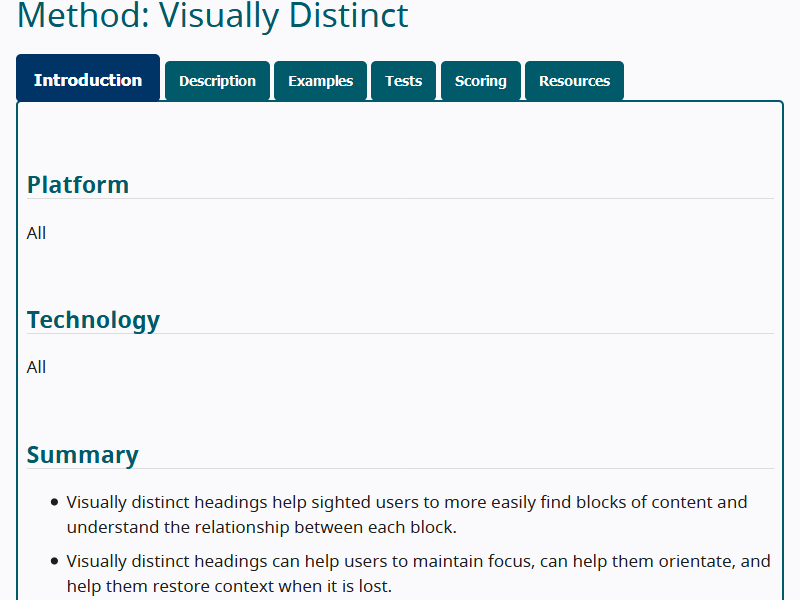

The W3C Accessibility Guidelines (WCAG) 3.0 provide a wide range of recommendations for making web content more accessible to users with disabilities. Following these guidelines will address many of the needs of users with blindness, low vision and other vision impairments; deafness and hearing loss; limited movement and dexterity; speech disabilities; sensory disorders; cognitive and learning disabilities; and combinations of these. These guidelines address accessibility of web content on desktops, laptops, tablets, mobile devices, wearable devices, and other web of things devices. They address various types of web content including static content, interactive content, visual and auditory media, and virtual and augmented reality. The guidelines also address related web tools such as user agents (browsers and assistive technologies), content management systems, authoring tools, and testing tools.
Each guideline in this standard provides information on accessibility practices that address documented user needs of people with disabilities. Guidelines are supported by multiple outcomes to determine whether the need has been met. Guidelines are also supported by technology-specific methods to meet each outcome.
This specification is expected to be updated regularly to keep pace with changing technology by updating and adding methods, outcomes, and guidelines to address new needs as technologies evolve. For entities that make formal claims of conformance to these guidelines, several levels of conformance are available to address the diverse nature of digital content and the type of testing that is performed.
W3C Accessibility Guidelines 3.0 is a successor to Web Content Accessibility Guidelines 2.2 [WCAG22] and previous versions, but does not deprecate these versions. WCAG 3.0 will incorporate content from and partially extend User Agent Accessibility Guidelines 2.0 [UAAG20] and Authoring Tool Accessibility Guidelines 2.0 [ATAG20].
While there is a lot of overlap between WCAG 2.X and WCAG 3.0, WCAG 3.0 includes additional tests and different scoring mechanisms. As a result, WCAG 3.0 is not backwards compatible with WCAG 2.X. WCAG 3.0 does not supersede WCAG 2.2 and previous versions; rather, it is an alternative set of guidelines. Once these guidelines become a W3C Recommendation, the W3C will advise developers, content creators and policy makers to use WCAG 3.0 in order to maximize future applicability of accessibility efforts. However, content that conforms to earlier versions of WCAG continue to conform to those versions.
See WCAG 3 Introduction for an introduction and links to WCAG technical and educational material.
Status of This Document
This section describes the status of this
document at the time of its publication. Other documents may supersede
this document. A list of current W3C publications and the latest revision
of this technical report can be found in the
W3C technical reports index at
https://www.w3.org/TR/.
GitHub Issues are preferred for
discussion of this specification.
Publication as an Editor's Draft does not imply endorsement
by the W3C Membership.
This is a draft document and may be updated, replaced
or obsoleted by other documents at any time. It is inappropriate to cite this
document as other than work in progress.
The W3C Accessibility Guidelines (WCAG) 3.0 show ways to make web content accessible to people with disabilities. WCAG 3.0 is a newer standard than the Web Content Accessibility Guidelines (WCAG) 2.2. You may use WCAG 2.2 or the new standard.
What’s new in WCAG 3.0?
WCAG 3.0 includes the needs of people with more types of disabilities.
It includes mobile and desktop applications, along with web content.
It has new guidelines and new tests.
It has new scoring. Your site or product no longer has to pass 100% of the guidelines, as long as people with disabilities can use it.
End of summary for Introduction
1.1 About WCAG 3.0
This specification presents a new model and guidelines to make web content and applications accessible to people with disabilities. The W3C Accessibility Guidelines (WCAG) 3.0 support a wide set of user needs, use new approaches to testing, and allow frequent maintenance of guidelines and related content to keep pace with accelerating technology change. WCAG 3.0 supports this evolution by focusing on users’ functional needs. These needs are then supported by outcomes and technology-specific methods to meet those needs.
Following these guidelines will make content more accessible to people with a wide range of disabilities, including accommodations for blindness, low vision and other vision impairments; deafness and hearing loss; limited movement and dexterity; speech disabilities; sensory disorders; cognitive and learning disabilities; and combinations of these. Following these guidelines will also often make content more usable to users in general as well as accessible to people with disabilities.
There are many differences between WCAG 2.X and WCAG 3.0. Content that conforms to WCAG 2.2 A & AA is expected to meet most of the minimum conformance level of this new standard but, since WCAG 3.0 includes additional tests and different scoring mechanics, additional work will be needed to reach full conformance. Since the new standard will use a different conformance model, the Accessibility Guidelines Working Group expects that some organizations may wish to continue using WCAG 2.X, while others may wish to migrate to the new standard. For those that wish to migrate to the new standard, the Working Group will provide transition support materials, which may use mapping and other approaches to facilitate migration.
The Silver Community Group and their research partners conducted a year of research which included a literature review as well as interviews, surveys, and self-reporting with people with disabilities, content developers, quality assurance professionals, tool developers, designers and policy makers.
The results are available in The Research Summary Slide Deck. One recurring theme was positive perceptions about the popularity and quality of the guidance in WCAG 2.0. Most of the opportunities identified in the research were changes in the structure and presentation of accessibility guidance to:
improve usability — especially for beginners;
support disability needs that cannot be tested by true/false success criteria; and
facilitate maintenance to keep the guidelines more current.
The goal of WCAG 3.0 is to provide information that can be used to improve the accessibility of products on a variety of platforms. WCAG 3.0 uses a model that allows it to address more disability needs than WCAG 2.X, as well as address publishing requirements and emerging technologies such as web XR (augmented, virtual and mixed reality) and voice input. It will also provide non-normative information about the ways web technologies need to work with authoring tools, user agents, and assistive technologies. The WCAG 3.0 model is designed to support better coverage across disabilities and be easier to maintain, so that the new model will be more enduring over time as technologies evolve.
The goal of WCAG 3.0 and supporting documents is to make digital products including web, ePub, PDF, applications, mobile apps, and other emerging technologies more accessible and usable to people with disabilities. It is the intention for WCAG 3.0 to meet this goal by supporting a wider set of user needs, using new approaches to testing, and allowing more frequent maintenance of guidelines to keep pace with accelerating technology change. The hope is that WCAG 3.0 will make it significantly easier for both beginners and experts to create accessible digital products that support the needs of people with disabilities.
Research and design work performed by the Silver Task Force identified key requirements needed to improve upon the existing WCAG 2.X structure. These requirements, presented in the Requirements for Silver document, shaped the guidelines that follow and should be taken into account when evaluating and updating the guidelines.
Editor's note
While the majority of guidelines are still to be written and we continue to explore additional ways of validating conformance, we seek wider public review on the approach presented here.
2. Structure of these guidelines
This section is non-normative.
Plain language summary of Structure of these guidelines
Guidelines: solutions to accessibility problems.
Outcomes: the desired result (or “outcome”) of reducing accessibility problems. This is what you test for.
Methods: detailed ways and tests for rating how well your project meets an outcome.
Some of these sections are in this document. You can find others in links within the sections.
End of summary for Structure of these guidelines
Figure 1 Core Structure
Figure 1 shows the core structure of WCAG 3.0. WCAG 3.0 has three levels of content with associated documentation. Guidelines form the top level. Each guideline contains multiple outcomes, with associated critical errors and outcomes scoring. Each outcome contains multiple methods, with an associated description and examples, tests, and test scoring.
2.1 Guidelines structure
Guidelines provide a high-level, plain-language version of the content for managers, policy makers, individuals who are new to accessibility, and other individuals who need to understand the concepts but not dive into the technical details. They provide an easy-to-understand way of organizing and presenting the outcomes so that non-experts can learn about and understand the concepts. Each guideline includes a unique, descriptive name along with a high-level plain-language summary. Guidelines address functional needs on specific topics, such as contrast, forms, readability, and more. Guidelines group related outcomes and are technology-independent.
Example: Use sections, headings, and sub-headings to organize your content.
2.2 Outcomes structure
Each guideline contains multiple outcomes. Outcomes result from practices that reduce or eliminate barriers that people with disabilities experience. Outcomes form the basis of a flexible and expansive architecture for accessibility guidelines that closely relates to the needs of people with disabilities. Outcomes are designed for use by developers, testers, and other technical experts.
Outcomes are written as testable criteria and include information on how to score the outcome in an optional Conformance Claim. Within a guideline, outcomes have an AND relationship. All relevant outcomes must be addressed but not all outcomes will apply to all technologies and situations. When an outcome does not apply, it is marked NA in the scoring.
Example: Convey hierarchy with semantic structure
2.2.1 Critical errors
Outcomes include the related critical errors that can occur and how to identify them. Not all outcomes have critical errors. Any critical errors will result in the lowest score for the outcome.
Evaluating processes requires counting critical errors that occur within the process and associated views. Critical errors are:
Errors located anywhere within the view that stop a user from being able to use that view (examples: flashing, keyboard trap, audio with no pause);
Errors that when located within a process stop a user from completing a process (example: submit button not in tab order); and
Errors that when aggregated within a view or across a process stop a user from using the view or completing the process (example: a large amount of confusing, ambiguous language).
2.2.2 Outcome rating
Each outcome is rated on a scale of 0 to 4. The rating model is designed to be flexible in order to allow more functional needs of people with disabilities to be included in the guidelines.
Each outcome defines the rating criteria used for that outcome. The rating criteria are designed to be technology agnostic but tie to the available methods so that method level scoring can be rolled up when possible or the tester can make an informed judgment call about the outcome rating.
2.3 Methods structure

Figure 2 Screenshot of a Method for Structured Content
Each outcome has one or more methods. There are three types of methods:
All - Methods that apply across all technologies.
Technology specific - Methods that apply to one of a predetermined list of technologies such as HTML, PDF, or VR.
Fallback - Methods that apply to emerging or proprietary technology and for technology that does not yet have a method written
When technology specific methods are provided, the outcomes will also include one or more fallback methods.
The methods include detailed information on how to meet the outcome, code samples, working examples, resources, as well as information about testing and scoring the method.
Example: Semantic headings (HTML)
Note
While WCAG 3 Methods have some similarity with WCAG 2 Techniques, they are not the same and are not interchangeable.
2.3.1 Description
Each method includes a detailed technical description of the method with including instructions on how the method works that do not depend on examples. If there are dependencies between methods, these are also listed here. Dependencies between methods will be a rare situation.
2.3.2 Examples
Each method also includes working code samples and detailed examples.
2.3.3 Tests
Tests provide ways to check that methods and techniques have been followed. Tests include step-by-step instructions on evaluating the method based on the technology being used. Tests may vary by technology as needed.
Tests specify the unit being tested and the approach to scoring for that test.
2.3.4 Test Scoring
Each method includes information on how to score individual instances of the test. The testing results for methods inform the rating of the related outcome.
3. Additional Documentation and Scoring Information
This section is non-normative.
Plain language summary of Additional Documentation and Scoring Information
How-to information: advice written in plain language, including information on how to get started with accessibility.
Functional needs: how to solve the access problems that people face.
Functional categories: groups of disability types.
Conformance levels: scoring your project’s accessibility. There are three levels for your project’s final score: bronze, silver, or gold. Scoring is not required.
Some of these sections are in this document. You can find others in links within the sections.
End of summary for Additional Documentation and Scoring Information
The core structure has inter-relationships with supporting documents and the scoring process. Functional needs inform both outcomes and functional categories. The tests within methods are used to inform the scores for each outcome. Then outcome scores are aggregated to create scores by functional category and an overall score. These then result in a bronze rating. Silver and gold ratings build on the bronze rating to demonstrate improved accessibility. General information about guidelines is available in How To documents.
Figure 3 Documentation and Scoring Structure
3.1 How tos
The How-To content provides explanatory material for each guideline that applies across technologies. This guidance explains how to apply the concepts presented in the guidelines for non-technical readers. This plain language resource includes information on getting started, who the guideline helps and how, as well information for project managers, designers and developers.
Figure 4 Example screenshot of a How-To for Structured Content
The example of a How-To for Structured Content provides basic information organized by tabs to help people get started with accessibility for structured content, plan for implementing accessible structured content across a project, design accessible structured content, and basics for developers new to accessibility of structured content. It also includes information on examples, the outcomes for meeting the guideline, and resources.
3.2 Functional needs
The development of WCAG 3 guidelines starts with functional needs. A functional need is a statement that describes a specific gap in one’s ability, or a specific mismatch between ability and the designed environment or context. Functional needs are applied to specific topics (for example: contrast, forms, readability, and more) to identify the barriers experienced by people with disabilities. The barriers in these topics inform the outcomes, which state the conditions to test whether the functional needs have been met. Functional needs are documented in the how-tos, supplementary material accompanying the guidelines.
Example: Use without vision.
Editor's note
The work of cataloging functional needs is still in process and will continue after the First Public Working Draft. Those interested can see more information in the draft Functional Needs.
3.3 Functional categories
Functional categories of disabilities group the functional needs of users with disabilities. Functional categories are used when reporting test results in the optional conformance claim.
Functional categories are similar to functional performance criterial in Section 508 [508-criteria] and functional performance statements in en 301 549 [en-301-549]. The current list of functional categories is:
Vision and Visual
Hearing and Auditory
Sensory Intersections
Mobility
Motor
Physical and Sensory Intersections
Speech
Attention
Language and Literacy
Learning
Memory
Executive
Mental Health
Cognitive and Sensory Intersections
Editor's note
The list of functional categories is a draft. Creating meaningful groupings is still a work in progress and currently evolving along with the work on cataloging functional needs. This work will continue after the First Public Working Draft. Those interested can see more information in the document DRAFT Functional Needs.
3.4 Conformance Levels
WCAG 3 has an optional scoring system that can better inform organizations on the quality of their accessibility effort. The optional conformance levels provide a way for organizations to report their conformance in simple manner. The bronze level is based on the score in each functional category and the overall score. Silver and gold levels require conforming at the bronze level plus additional improved usability for people with disabilities.
Editor's note
This first draft focuses on bronze level. Future drafts will have more information on silver and gold levels. We expect that bronze will be similar to WCAG 2 AA, while silver and gold will include more usability-type testing. This is still under development. WCAG 2.X AAA success criteria are generally included in WCAG 3. The design of the scoring model awards more points for implementing the outcomes that come from WCAG 2.X AAA.
4. Normative requirements
Plain language summary of Normative requirements
There are two types of content in this document:
Normative: what you must do to meet the guidelines.
Non-normative: advice to help you meet the guidelines. This is also called Informative.
End of summary for Normative requirements
In addition to this section, the Guidelines, Testing, and Conformance sections in WCAG 3.0 provide normative content and define requirements that impact conformance claims. Introductory material, appendices, sections marked as non-normative, diagrams, examples, and notes are informative (non-normative). Non-normative material provides advisory information to help interpret the guidelines but does not create requirements that impact a conformance claim.
The key words MAY, MUST, MUST NOT, NOT RECOMMENDED, RECOMMENDED, SHOULD, and SHOULD NOT are to be interpreted as described in [RFC2119].
Editor's note
Outcomes are normative. The working group is looking for feedback on whether the following should be normative or informative: guidelines, methods, critical errors, and outcome ratings.
5. Testing
Plain language summary of Testing - What types of tests are used?
WCAG 3.0 includes two types of tests:
Atomic tests: simple tests (usually of the code), like the way we test today. You use these tests to reach the bronze level.
Holistic tests: usability tests and manual tests with hardware and software used by people with disabilities (assistive technologies). You use these tests to reach the silver or gold level.
Some content will meet outcomes if it passes atomic tests, but that content still might not be usable by all people with disabilities. Holistic tests can help you fix that.
End of summary for Testing
Editor's note
The model presented provides a structure for testing that can be built upon to better accommodate dynamic or very frequently updated content than WCAG 2.X. We are exploring additional approaches to testing using holistic tests, sampling and/or other alternatives for reaching conformance in situations where testing all content is not possible. We also plan to include a definition and concept for substantially conforming in order to address the potential difficulties presented when testing all content in large digital products and 3rd party content.
WCAG 3.0 tests and scores outcomes. Outcomes are written as testable criteria that allow testers to objectively determine if the content they are evaluating satisfies the criteria.
Testing outcomes uses both views and processes to define what is being tested. Views include all content visually and programmatically available without a substantive change. Processes are a sequence of steps that need to be completed in order to accomplish an activity/task from end-to-end. When testing processes, the content used to complete the process as well as all of the associated views need to be included in the test.
5.1 Views
A view is a single interaction with content. Conceptually, it corresponds to the definition of a web page as used in WCAG 2.X, but is not restricted to content meeting that definition. Each change of content as understood by the user comprises a new view.
5.2 Processes
A process is a complete activity the user performs. Example tasks include:
Logging into a site and being recognized as an authenticated user;
Ordering an item, in which case the process includes the entire set of tasks from searching for the item, adding it to the shopping cart, paying for it, and receiving confirmation;
Submitting tax information, from start to end of the process; and
Interacting with other users in a virtual reality environment.
Although content may satisfy all outcomes using the atomic tests, the content may not always be usable by people with a wide variety of disabilities. The holistic tests address this gap by evaluating more of the user experience than atomic testing.
Editor's note
We are looking for more appropriate terms to distinguish between these two types of tests and welcome suggestions
5.3.1 Atomic tests
Atomic tests evaluate content, often at an object level, for accessibility. Atomic tests include the existing tests that support A, AA, and AAA success criteria in WCAG 2.X. They also include tests that may require additional context or expertise beyond tests that fit within the WCAG 2.X structure. In WCAG 3.0, atomic tests are used to test both processes and views. Test results are then aggregated across the selected views. Critical errors within selected processes are also totaled. Successful results of the atomic tests are used to reach a Bronze rating.
Atomic tests may be automated or manual. Automated evaluation can be completed without human assistance. These tests allow for a larger scope to be tested but automated evaluation alone cannot determine accessibility. Over time, the number of accessibility tests that can be automated is increasing, but manual testing is still required to evaluate most methods at this time.
5.3.2 Holistic tests
Holistic tests include assistive technology testing, user-centered design methods, and both user and expert usability testing. Holistic testing applies to the entire declared scope and often uses the declared processes to guide the tests selected. Successful results of holistic tests are used to reach a silver or gold rating.
Editor's note
Future drafts will further explore holistic tests and provide examples as well as detail how to apply them.
5.4 Technology specific testing
Each outcome includes methods associated with different technologies. Each method contains tests and techniques for satisfying the outcome. The outcome is written so that testers can test the accessibility of new and emerging technologies that do not have related methods based solely on the outcome.
Editor's note
We continue to test this approach and others for validity, reliability, sensitivity, adequacy, and complexity. Alternatives that we are exploring are noted as separate editor’s notes where applicable. We welcome suggestions on ways to improve the scoring to better meet these criteria.
6. Scoring
Plain language summary of Scoring - How are tests scored?
Besides true/false scoring methods, we’ve included testing options for new guidance, such as rating scales.
Each outcome has a section that shows how it is scored.
End of summary for Scoring
Editor's note
One of the goals of WCAG 3.0 is to expand scoring tests of methods beyond a binary true/false choice at the page level. We have included tests within the sample outcomes that demonstrate alternatives such as rubrics and scales. We are also exploring integrating these options into Accessibility Conformance Testing format. We will include example tests in a future draft. Our intent is to include detailed tests for methods to support each outcome within the WCAG 3.0 model.
Each outcome has methods associated with different technologies. Each method contains tests and techniques for meeting that outcome. Testers can test the accessibility of new and emerging technologies that do not have related methods based on the outcome.
6.1 Scoring atomic tests
In most cases, testing individual objects will result in binary, pass / fail outcome for each element. This leads to either a pass / fail or a percentage rating depending on the test. A rating scale may be provided for some tests to allow the tester to assign a quality judgement of an element or block of content. Whether scoring is binary (pass/fail) or uses rating scales, will depend on the method, outcome, and technology. Binary scoring works well when the unit being tested has clear boundaries and pass/fail conditions. Rating scales work better when the unit being tested does not have clear boundaries, when evaluating success requires a quality judgement, or when the test includes gradations of quality. Each of these results can be then be assigned a percentage or averaged to inform the overall score of an outcome.
Test results for views:
Tests that results in a pass or fail condition will be assigned a 100% or 0%;
Tests at the element level that can be consistently counted will be assigned a percentage (number passed / total number of instances);
Tests that apply to content without clear boundaries will be scored using a rating scale. The rating scales may vary based on the test and may be presented as numeric scale, an adjectival rating or a rubric. Each of these can be converted into a percentage to make it easier to compare across tests.
In addition, critical errors within selected processes will be identified and totaled. Any critical errors will result in score of very poor (0).
6.2 Scoring outcomes
The results from the atomic tests are aggregated across views and used along with the number of critical errors to assign an adjectival rating to the outcome. Testers will then use the guidance provided in the outcome along with reasonable judgement of the context that the errors occur in to assign an accessibility score of the outcome.
Potential thresholds for adjectival ratings of test results:
Very Poor (0)
Any critical errors or less than 50% of related tests pass
Poor (1)
No critical errors, approx. 50% to 79% of related tests pass
Fair (2)
No critical errors, approx. 80% to 89% of related tests pass
Good (3)
No critical errors, approx. 90% to 98% of related tests pass
Excellent (4)
No critical errors, approx. 99% to 100% of related tests pass
Note
The thresholds are different for different outcomes.
These thresholds are still being tested and adjusted. These are included as examples to gather feedback on this scoring approach.
6.3 Overall scores
After all outcomes have been scored, the ratings are averaged for a total score and a score by the functional category(ies) they support. Conformance at the bronze level requires no critical errors and at least 3.5 total score and at least a 3.5 score within each functional category.
Editor's note
This approach, which allows the tester some flexibility in assigning scores, has the advantage of simplicity and allowing a tester to take the context into account beyond the simple percentages. The second option we are exploring is to carry percentages from tests through to a final score. In this case a bronze rating would require a total score of at least 90% and at least 90% within each functional need category. This number would likely shift as we continue testing. We invite comment on these options as well as suggestions for an alternative solution.
6.4 Scoring holistic tests
The points from holistic tests do not affect the scores of atomic tests. Rather a minimum number of holistic tests will need to be met in order to reach a silver rating and additional holistic tests will be needed to reach a Gold rating. Getting a silver or gold rating requires a Bronze rating.
Editor's note
We continue to work on the scoring of holistic tests and will provide more details in a future iteration of this document.
7. Guidelines
Plain language summary of Guidelines
The following five guideline examples show different features of WCAG 3.0:
Text alternatives;
Clear words;
Captions;
Structured content (headings); and
Visual contrast of text (color contrast).
End of summary for Guidelines
The individuals and organizations that use WCAG vary widely and include web designers and developers, policy makers, purchasing agents, teachers, and students. In order to meet the varying needs of this audience, several layers of guidance are provided including functional categories of disabilities, general guidelines, outcomes that can be tested, a rich collection of methods, resource links, and code samples.
The guidelines included in this draft have been selected to show different types of content:
Text alternatives - a direct migration from WCAG 2.X success criterion
These are early drafts of guidelines included to serve as initial examples. They are used to illustrate what WCAG 3.0 could look like and to test the process of writing content. These guideline drafts should not be considered as final content of WCAG 3.0. They are included to show how the structure would work. As this draft matures, numbering of individual guidelines will be removed to improve overall usability of the guidelines in response to public requests. WCAG 2.x success criteria will be migrated to this new structure before WCAG 3.0 moves to candidate recommendation.
As more content is developed, this section will be a list of guidelines with a unique short name, and the text of the requirement written in plain language. To see the overall plan for migrating content from WCAG 2.1 to WCAG 3.0, see the WCAG to Silver Outline Map.
Provides text alternatives for non-text content for user agents and assistive technologies. This allows users who are unable to perceive and / or understand the non-text content to determine its meaning.
Functional categories for Text alternative available
This outcome relates to the following functional categories:
Sensory - Vision & Visual
Sensory Intersections
Cognitive - Language & Literacy
Cognitive - Learning
Cognitive - Memory
Cognitive - Mental Health
Cognitive & Sensory Intersections
Critical errors for Text alternative available
Any image of text without an appropriate text alternative needed to complete a process.
Rating for Text alternative available
Rating
Criteria
Rating 0
Less than 60% of all images have appropriate text alternatives OR there is a critical error in the process
Rating 1
60% - 69% of all images have appropriate text alternatives AND no critical errors in the process
Rating 2
70%-79% of all images have appropriate text alternatives AND no critical errors in the process
Rating 3
80%-94% of all images have appropriate text alternatives AND no critical errors in the process
Rating 4
95% to 100% of all images have appropriate text alternatives AND no critical errors in the process
Editor's note
We selected the Text Alternatives guideline to illustrate how WCAG 2.2 success criteria can be moved to WCAG 3.0 with minimal changes. Most of the material was directly copied from W3C sources such as WCAG 2.1, Web Accessibility Tutorials, and HTML 5.3 examples.
There are subtleties to the scoring of the methods that should be noted in this guideline. We have included four different methods for different types of images in HTML:
functional images;
informative images;
images of text; and
decorative images.
The scoring is set up to work across all types of images to make it easier for automated tools. The automated tool does not need to know the type of image and can give you a score of the number of images and the number of images passed. The tester reviewing the path that a user would use to accomplish a task can identify whether the lack of a text alternative is a critical error that would stop a user from completing a task. This allows an automated tool to do the heavy lifting for identifying all the text alternatives while still allowing a knowledgeable tester to identify and evaluate the images that are necessary to complete a task.
This guideline also illustrates an example of critical errors along a path. Organizations with large numbers of images often have a missing text alternative on an image as a bug. They need to know when that missing text alternative is critical to be fixed, and when it is a lower priority. This critical error example shows how an image without alternative text that is crucial for completing the task gives a rating of zero. An image without alternative text that is not crucial, such as an image in the footer, does not block the organization from receiving the score the rest of the images deserve. This makes it possible for very large web sites or apps to be able to conform even if they have a low number of bugs without losing the critical needs of people with disabilities.
We are interested in your feedback on this approach to testing and scoring. Does this approach help large organizations conform even if their site is not 100% perfect? Do you think that organizations will interpret that they only need 95% of text alternatives for images and then stop adding alternative text? Are the bands of numbers for the different ratings correct? Do people with disabilities in particular feel that this approach will meet their needs?
For this First Public Working Draft, we included HTML methods. This will be expanded in future drafts. We have also included a method, Author Control of Text Alternatives (ATAG), that demonstrates how requirements from the Authoring Tool Accessibility Guidelines (ATAG) 2.0 can be included as methods.
This outcome relates to the following functional categories:
Speech
Cognitive - Attention
Cognitive - Language & Literacy
Cognitive - Learning
Cognitive - Memory
Cognitive - Executive
Cognitive - Mental Health
Cognitive & Sensory Intersections
Independence
Critical errors for Common clear words
None.
Rating for Common clear words
Rating
Criteria
Not Applicable
If this outcome does not apply to the technology or content being scored, do not score it.
Rating 0
Average score below 1
Rating 1
Not used in this outcome
Rating 2
Average score of 1-1.6
Rating 3
Not used in this outcome
Rating 4
Average score of 1.7 or above
Editor's note
We selected Use Clear Words to show that the new WCAG3 structure can include accessibility guidance that does not fit into the WCAG 2.x structure. In the research phase of this project, we identified user needs from the Cognitive Accessibility Task Force and the Low Vision Accessibility Task Force that could not be addressed by a true/false success criterion in WCAG 2.1. We wanted to select one of those user needs and include it in the first draft of WCAG3 to show that more complex user needs can be included and still be testable and scored.
Use Clear Words is a new guideline proposed by the Cognitive Accessibility Task Force (COGA) and includes research, documents and comments from COGA. The selection of user needs and the outcomes necessary to address them is aligned with the new COGA publication, Making content usable for people with cognitive and learning disabilities [coga-usable].
The clear words guideline was included to illustrate that the proposed WCAG 3.0 scoring and structure can be used in non-binary testing. Clear words guideline uses a rating scale with flexible units of measure. For example, testing could be done by a webpage, a paragraph, a section of instructions on an application, or other. A manual tester evaluates the paragraph, webpage, or section on a rating scale. While we do not know of any mainstream accessibility tool that measures common words, there are some working prototypes of tools developed outside the W3C. We are interested in feedback on testing this guideline and its scoring.
There are a number of exceptions to this guideline. We are interested in feedback where to put that information for ease of use.
This category of new guideline needs further development. It is included to show that it could work, not necessarily that this is the shape of the final guideline.
7.3 Captions
Guideline: Provide captions and associated metadata for audio content.Captions how-to
Translates speech and non-speech audio
Translates speech and non-speech audio into alternative formats (e.g. captions) so media can be understood when sound is unavailable or limited. User agents and APIs support the display and control of captions.
Functional categories for Translates speech and non-speech audio
This outcome relates to the following functional categories:
Sensory - Hearing & Auditory
Sensory Intersections
Cognitive - Language & Literacy
Cognitive & Sensory Intersections
Critical errors for Translates speech and non-speech audio
Any video without captioning that is needed to complete a process. For example, an education site with a video that a student will be tested on or a shopping experience of previewing movies. If they do not have captioning (closed or open captioning), they fail.
Rating for Translates speech and non-speech audio
Rating
Criteria
Rating 0
Average score 0-.7 or a critical error
Rating 1
Not applicable
Rating 2
Average score .8-1.5 and no critical error
Rating 3
Not applicable
Rating 4
Average score 1.6 to 2 and no critical error
Conveys information about the sound
Conveys information about the sound in addition to the text of the sound (for example, sound source, duration, and direction) so users know the necessary information about the context of the sound in relation to the environment it is situated in.
Functional categories for Conveys information about the sound
This outcome relates to the following functional categories:
Sensory - Hearing & Auditory
Sensory Intersections
Cognitive - Language & Literacy
Cognitive & Sensory Intersections
Critical errors for Conveys information about the sound
None.
Rating for Conveys information about the sound
Is meta-data directionality essential to this experience?
Can a user orientate themselves to the sound with/without any additional interface?
Rating
Criteria
Rating 0
No meta-data
Rating 1
Sound visually indicates the direction of origin in 2D space
Rating 2
Not applicable
Rating 3
Meta-data includes the location the sound originates in 3D space
Rating 4
Meta-data includes the location the sound originates, Meta-data includes the direction of the sound.
Editor's note
This guideline demonstrates how the WCAG3 structure can be used with emerging technologies such as virtual reality, augmented reality and other immersive web technologies (XR). Research in this area is ongoing and we expect to complete more details in future drafts.
The Silver XR group has been working closely with other groups within the W3C as well as researchers in the area of captioning in immersive technologies. This is a rapidly developing field, and the recommendations listed are more exploratory. They are included as an example that WCAG3 can be used with emerging technologies. We hope that including this guideline will help inspire more research in this area.
Because this guideline was included to demonstrate emerging technology, there is little guidance included on traditional captions. Future drafts will also include more traditional caption guidance.
We are looking for feedback on the scoring of captions. Media that is essential to accomplishing the task that does not have captions is a critical error and automatically fails (a 0 rating). Examples include educational videos, entertainment site previews, or directions for installing a product. Other videos without captions that are not essential to the task such as advertising and promotional videos that are not essential to shopping experience are not automatically failed, but the cumulative lack of captioning reduces the score. We want feedback on this approach.
We want public feedback about whether Open Captions (burned in captions) should be considered as equivalent to Closed Captions. Closed captions are text that can be customized to meet user needs, for example, a hard of hearing person with low vision (like a lot of aging people). Open captions are burned in and cannot be customized. They can't be adapted to other languages. If closed captions are added, then they are overlaid on the Open Captions and hard to read. If we receive sufficient feedback to leave captions as they are today (both closed or open are equally acceptable), then we will use a simple scoring rating. If we decide to not accept open captions as equivalent to closed captions, then we will give more points to closed captions than open.
Note that the advanced XR outcomes and metadata do not have critical errors. This is a way that best practices can be included so that they are not punitive, but could give extra points that an organization who implements them could use to potentially raise their score. We are interested in your feedback about this approach.
Organizes content into logical blocks with headings relevant to the subsequent content. This makes locating and navigating information easier and faster.
Functional categories for Conveys hierarchy with semantic structure
This outcome relates to the following functional categories:
Sensory - Vision & Visual
Sensory Intersections
Physical & Sensory Intersections
Cognitive - Language & Literacy
Cognitive & Sensory Intersections
Critical errors for Conveys hierarchy with semantic structure
One or more headings necessary to locate the content needed to complete a process are not coded as headings.
Rating for Conveys hierarchy with semantic structure
Rating
Criteria
Rating 0
25% or less are correctly semantically coded (including level) OR there is a critical error in the process
Rating 1
26-50% or less of the visual headings are correctly semantically coded (including level) AND no critical errors in the process
Rating 2
51-80% or less of the visual headings are correctly semantically coded (including level) AND no critical errors in the process
Rating 3
81-95% or less of the visual headings are correctly semantically coded (including level) AND no critical errors in the process
Rating 4
96-100% or less of the visual headings are correctly semantically coded (including level) AND no critical errors in the process
Editor's note
We included the structured content guideline as an example of an “easy” guideline that was well understood and addressed diverse disability needs. While WCAG2 addresses headings from the semantic needs of screenreader users, little has been done to directly address the needs of people with cognitive disabilities around headings. This guideline shows how a well-known area of accessibility can address more user needs of different groups of people with disabilities. The structured content guideline has multiple outcomes working together to cover the different aspects of accessibility needed for different categories of people with disabilities.
The structured content guideline began as a guideline on use of headings. Going through the content development process, we realized that it was a broader topic than simply headings, but there is little content developed beyond headings. Note that this guideline is used for prototyping, and is the most uneven in style of content. Additional outcomes and content will be added in future drafts to make this guideline more complete.
Structured content guideline also shows how several WCAG 2.1 success criteria can be re-combined and include AAA level success criteria such as 2.4.10 Section Headings. The scoring shows how the rating can be improved by including all headings, but does not fail the lack of section headings, unless that section heading is essential to accomplishing a task. We think this will allow organizations to continually improve their use of headings without failing them for what was formerly required by an AAA success criterion.
We are looking for feedback on using scoring as a way to encourage adoption of AAA success criteria without failures. Do you like the inclusion of broader needs for structured content than providing semantics for screenreader users? Do you think this should be a separate guideline, or do you like having multiple, testable outcomes supporting the guideline? Do you like the approach of merging WCAG2 success criteria with related user needs?
Functional categories for Luminance contrast between background and text
This outcome relates to the following functional categories:
Sensory - Vision & Visual
Critical errors for Luminance contrast between background and text
None.
Rating for Luminance contrast between background and text
Rating
Criteria
Rating 0
Any failures on the Advanced Perceptual Contrast Algorithm (APCA) lookup table or the lowest APCA value is more than 15% below the values on the APCA lookup table
Rating 1
The lowest APCA value is 10-15% below the values on the APCA lookup table
Rating 2
The lowest APCA value is 5-9% below the values on the APCA lookup table
Rating 3
The lowest APCA value is 1-4% below the values on the APCA lookup table
Rating 4
All reading text meets or exceeds the values on the APCA lookup table
Editor's note
Visual Contrast is a migration from WCAG 2.1 with significant updates:
New calculations of contrast based on more modern research on color perception.
Merging the 1.4.3 AA and 1.4.6 AAA levels into one guideline.
New test of text contrast.
At this time, it only includes textual visual contrast.
We propose changing the names of Contrast (Minimum) and Contrast (Enhanced) to Visual Contrast of Text as a signal of a paradigm change from one about color to one about perception of light intensity. The reason for this change is that the understanding of contrast has matured and the available research and body of knowledge has made breakthroughs in advancing the understanding of visual contrast.
The proposed new guidance more accurately models current research in human visual perception of contrast and light intensity. The goal is to improve understanding of the functional needs of all users, and more effectively match the needs of those who face barriers accessing content. This new perception-based model is more context dependent than a strict light ratio measurement; results can, for example, vary with size of text and the darkness of the colors or background.
This model is more responsive to user needs and allows designers more choice in visual presentation. It does this by including multi-factor assessment tests which integrate contrast with inter-related elements of visual readability, such as font features. It includes tests to determine an upper limit of contrast, where elevated contrast may impact usability.
This outcome will eventually include a second rating approach based on the mean average APCA value for all text in a process and view based on a character count.
8. Conformance
Plain language summary of Conformance
You might want to make a claim that your content or product meets the WCAG 3.0 outcomes. If it does meet the outcomes, we call this “conformance.” To conform to WCAG 3.0, your test results must show that your project is accessible.
If you want to make a conformance claim, you must use the process described in this document. Your content can conform to WCAG 3.0, even if you don’t want to make a claim. You can still use this process to test your project’s accessibility.
End of summary for Conformance
8.1 Conformance levels
Editor's note
WCAG 3.0 includes a new conformance model in order to address a wider range of user needs, test a wider range of technologies and support new approaches to testing. There are several key goals for this new conformance model:
Develop a scoring model that encourages websites to continue to do better and better (vs. stopping at the previous AA level);
Better reflect the lived experience of people with disabilities, who successfully use sites that have some content that does not meet WCAG 2.0 AA, or who encounter barriers with sites that meet WCAG 2.0 AA;
Allow for bugs and oversight by content authors, provided the impact of them is limited to users with disabilities.
To do this, the conformance model prioritizes content needed to complete tasks while still testing the entire view for accessibility errors. This priority is reflected in the scoring system, which does not allow for errors along the paths needed to complete processes but allow for some accessibility errors outside process completion. This means that sites may conform at the lowest level (Bronze), while still containing a small amount of content that does not meet one or more guidelines, so long as that content doesn’t prevent people with disabilities from successfully using the site.
We seek feedback on whether this flexibility will be beneficial in encouraging content providers to meet conformance because it is more achievable or whether content providers are less likely to improve accessibility if they aren't required to. We also seek feedback on the conformance approach as a whole.
WCAG 3.0 defines three levels of conformance: bronze, silver, and gold.
8.1.1 Bronze
Bronze is the minimum conformance level. Content that does not meet the requirements of the bronze level does not conform to WCAG 3.0. The bronze level can be verified using atomic tests. While there is a lot of overlap between WCAG 2.X and WCAG 3.0, WCAG 3 includes additional tests and different scoring mechanics. As a result, WCAG 3.0 is not backwards compatible with WCAG 2.X.
For content that conforms to the bronze level:
The total score and score within each of the functional categories MUST be at least 3.5; and
Conformance to this specification at the bronze level does not mean every requirement in every guideline is fully met. Bronze level means that the content in scope does have any critical errors and meets the minimum percentage of @@
8.1.2 Silver
Silver is a higher conformance level that addresses additional outcomes. Some holistic testing is necessary to verify conformance to this level.
Use of holistic tests to meet this level will be further explored in future drafts
8.1.3 Gold
Gold is the highest conformance level that addresses the remaining outcomes described in the guidelines. Additional holistic testing is necessary to verify conformance to this level.
Use of holistic tests to meet this level will be further explored in future drafts
8.2 Conforming alternative version
Editor's note
For this first draft, the Accessibility Guidelines Working Group has focused on the basic conformance model. For a next draft, we will explore how conforming alternative versions fit into the new conformance model.
8.3 Only accessibility-supported ways of using technologies
Editor's note
For this first draft, the Accessibility Guidelines Working Group has focused on the basic conformance model. For a next draft, we will explore how accessibility-supported fits into the new conformance model.
8.4 Defining conformance scope
When evaluating the accessibility of content, WCAG 3.0 requires the outcomes apply to a specific scope. While the scope can be an all content within a digital product, it is usually one or more sub-sets of the whole. Reasons for this include:
Large amounts of content are impractical to evaluate comprehensively using anything beyond automated evaluation of atomic tests;
In many cases, content changes frequently, causing evaluation to be accurate only for a specific moment in time;
Some content is more important to the majority of users than other content; and
Content that mostly meets the requirements but has problems can interfere with the user's ability to complete a process begun elsewhere.
WCAG 3.0 therefore defines two inter-related ways to scope content: views and processes. Evaluation is done on one or more complete views or processes, and conformance is determined on the basis of one or more complete views or processes.
Conformance is defined only for processes and views. However, a conformance claim may be made to cover one process and view, a series of processes and views, or multiple related processes and views. All unique steps in a process MUST be represented in the set of views. Views outside of the process MAY also be included in the scope.
Editor's note
The AG WG and Silver Task Force recognize that representative sampling is an important strategy that large and complex sites use to assess accessibility. While it is not addressed within this document at this time, our intent is to later address it within this document or in a separate document before the guidelines reach the Candidate Recommendation stage. We welcome your suggestions and feedback about the best way to incorporate representative sampling in WCAG 3.0.
8.5 Conformance requirements
In order for technology to conform to WCAG 3.0, the following conformance requirements apply:
Conformance level - Content MUST meet the requirements of the selected conformance level.
Processes and views - Conformance (and conformance level) MUST apply to complete processes and views, and MUST NOT exclude any part of a process or view.
8.6 Conformance claims
Conformance claims are not required. Authors can conform to WCAG 3.0 without making a claim. The material below describes how to make a conformance claim if that option is chosen.
8.6.1 Required components of a conformance claim
A conformance claim MUST include the following information:
Date of the claim;
Guidelines title, version and URIWeb Content Accessibility Guidelines 3.0 at ???
Conformance level satisfied: (bronze, silver, or gold);
A concise description of the views and processes, such as a list of URIs for which the claim is made, including any state changes which lead to a new view; and
The technology including the hardware, software, and assistive technology used to test the claim.
8.6.2 Example conformance claim
On 12 August 2020, the following 10 views and 2 processes conform to WCAG 3.0 at a bronze level. Processes were selected because they are the most common activities on the site and include 4 unique views. The other 6 views are the most commonly used.
Process 1: Order Newsletter (www.example.com, www.example.com/newsletter)
These were tested using Firefox and Chrome on a Windows platform. The assistive technology used included JAWS and Dragon.
9. Glossary
Note
Many of the terms defined here have common meanings. When terms appear with a link to the definition, the meaning is as formally defined here. When terms appear without a link to the definition, their meaning is not explicitly related to the formal definition here. These definitions are in progress and may evolve as the document evolves.
Adjectival rating
A system to report evaluation results as a set of human-understandable adjectives which represent
groupings of scores.
Automated
evaluation
Evaluation conducted using software tools, typically evaluating code-level features and applying
heuristics for other tests.
Automated testing is contrasted with other types of testing that involve human judgement or
experience. Semi-automated evaluation allows machines to guide humans
to areas that need inspection. The emerging field of testing conducted via
machine learning is not included in this definition.
Conformance
Satisfying all the requirements of the guidelines. Conformance is an important part of following
the guidelines even when not making a formal Conformance Claim.
An accessibility problem that will stop a user from being able to complete a
process.
Critical errors include:
Items that will stop a user from being able to complete the task if it exists anywhere on
the view (examples: flashing, keyboard trap, audio with no pause);
Errors that when located within a process means the process cannot be completed (example:
submit button not in tab order);
Errors that when aggregated within a view or across a process cause failure (example: a
large amount of confusing, ambiguous language).
Deprecate
To declare something outdated and in the process of being phased out, usually in favor of a specified replacement.
Deprecated documents are no longer recommended for use and may cease to exist in the future.
Evaluation
The process of examining content for conformance to these
guidelines.
Provides explanatory material for each guideline that applies across technologies.
This plain language resource includes information on getting started, who the guideline helps and how, as well as information for designers and developers.
Evaluation conducted by a human, typically to apply human judgement to tests
that cannot be fully automatically evaluated.
Human evaluation is contrasted with automated evaluation which is done entirely by
machine, though it includes semi-automated evaluation which allows
machines to guide humans to areas that need inspection. Human evaluation
involves inspection of content features, by contrast with user
testing which directly tests the experience of users with
content.
Informative
Content provided for information purposes and not required for conformance.
Text that is programmatically associated with non-text content or referred to from text that is programmatically associated with non-text content.
Programmatically associated text is text whose location can be programmatically determined
from the non-text content.
An image of a chart is described in text in the paragraph after the chart. The short
text alternative for the chart indicates that a description follows.
User need
The end goal a user has when starting a process through digital means.
User testing
Evaluation of content by observation of how users with specific functional needs are able to complete a process and how the content meets the relevant outcomes.
View
All content visually and programmatically available without a substantive change.
Views vary based on the technology being tested. While these guidelines provide guidance on scoping a view, the tester will determine what constitutes a view, and describe it. Views will often vary by technology. Views typically include state permutations that are based on that view such as dialogs and alerts, but some states may deserve to be treated as separate views.
Visual Contrast
The combination of foreground and background colors along with font weight and size that make text readable.
A. Guidelines development methodology
B. Differences from WCAG 2
B.1 Outcomes
Outcomes are different from WCAG 2.X success criteria. Compared to success criteria, outcomes are written to be:
In plain language;
More understandable by people who are not experts in technology;
More user-need oriented instead of technology oriented;
More granular, so there will be more of them; and
More flexible to allow more tests than the true/false statements of WCAG 2.X.
The design of outcomes allows more varied needs of people with disabilities than could have been included in WCAG 2.X.
Methods map approximately to WCAG 2.X Techniques documents.
B.2 Approximate mapping of WCAG 2 and WCAG 3 documentation
WCAG 2
WCAG 3
Success Criteria
Outcomes
Techniques
Methods
Understanding
How-to
C. Change log
D. Acknowledgements
D.1 Participants of the Silver Task Force and Silver Community Group who contributed to this document
Jake Abma
Charles Adams
Jennison Asuncion
Bruce Bailey
Frederick Boland
Omar Bonilla
Alice Boxhall
Shari Butler
Sheri Byrne-Haber
Jennifer Chadwick
Wendy Chisholm
Victoria Clark
Kelsey Collister
Michael Cooper
Michael Crabb
Joe Cronin
Kim Dirks
David Fazio
Wilco Fiers
Detlev Fischer
John Foliot
Luis Garcia
Lucy Greco
Charles Hall
Ryan Hemphill
Katharina Herzog
Scott Hollier
Angela Hooker
Sarah Horton
Matthew King
Andrew Kirkpatrick
John Kirkwood
Peter Korn
JaEun Ku
Shawn Lauriat
Michellanne Li
Todd Libby
Imelda Llanos
Thomas Logan
Eleanor Loiacono
Chris Loiselle
John McNabb
Peter McNally
Jan McSorley
Rachael Montgomery
Mary Jo Mueller
Lyn Muldrow
Charles Nevile
Christy Owens
Kimberly Patch
Christian Perera
Melanie Philipp
Jill Power
Sarah Pulis
John Rochford
Abi Roper
Cybele Sack
Shrirang Sahasrabudhe
Janina Sajka
Karen Schriver
Stein Erik Skotkjerra
David Sloan
Andrew Somers
Jeanne Spellman
Ruth Spina
Francis Storr
David Swallow
Mark Tanner
Suzanne Taylor
Makoto Ueki
sweta wakodkar
Takayuki Watanabe
Léonie Watson
Thomas Westin
D.2 Participants of the Accessibility Guidelines Working Group who reviewed this document
Jake Abma
Shadi Abou-Zahra
Chuck Adams
Amani Ali
Jim Allan
Paul Adam
Jon Avila
Bruce Bailey
Garenne Bigby
Judy Brewer
Shari Butler
Alastair Campbell
Laura Carlson
Pietro Cirrincione
Michael Cooper
Jennifer Delisi
Wayne Dick
Kim Dirks
Shwetank Dixit
Nicaise Dogbo
E.A. Draffan
Michael Elledge
David Fazio
Wilco Fiers
Detlev Fischer
John Foliot
Betsy Furler
Matt Garrish
Alistair Garrison
Michael Gower
Charles Hall
Katie Haritos-Shea
Andy Heath
Shawn Henry
Sarah Horton
Abi James
Marc Johlic
Andrew Kirkpatrick
John Kirkwood
Peter Korn
JaEun Ku
Patrick Lauke
Shawn Lauriat
Steve Lee
Chris Loiselle
Greg Lowney
David MacDonald
Chris McMeeking
Jan McSorley
Melina Möhnle
Rachael Montgomery
Mary Jo Mueller
Gundula Niemann
Brooks Newton
Caryn Pagel
Justine Pascalides
Kim Patch
Melanie Philipp
Ruoxi Ran
Stephen Repsher
John Rochford
Cybele Sack
Janina Sajka
Lisa Seeman-Kestenbaum
Glenda Sims
Avneesh Singh
Andrew Somers
Jaeil Song
Jeanne Spellman
Makoto Ueki
Kathleen Wahlbin
Léonie Watson
D.3 Research Partners
These researchers selected a Silver research question, did the research, and graciously allowed us to use the results.
David Sloan and Sarah Horton, The Paciello Group, WCAG Success Criteria Usability Study
Scott Hollier et al, Curtin University, Internet of Things (IoT) Education: Implications for Students with Disabilities
Peter McNally, Bentley University, WCAG Use by UX Professionals
Professor Mike Crabb, student papers of Silver research topics
Eleanor Loiacono, Worcester Polytechnic Institute Web Accessibility Perceptions (Student project from Worcester Polytechnic Institute)
D.4 Enabling funders
This publication has been funded in part with U.S. Federal funds from the Health and Human Services, National Institute on Disability, Independent Living, and Rehabilitation Research (NIDILRR), initially under contract number ED-OSE-10-C-0067 and now under contract number HHSP23301500054C. The content of this publication does not necessarily reflect the views or policies of the U.S. Department of Health and Human Services or the U.S. Department of Education, nor does mention of trade names, commercial products, or organizations imply endorsement by the U.S. Government.